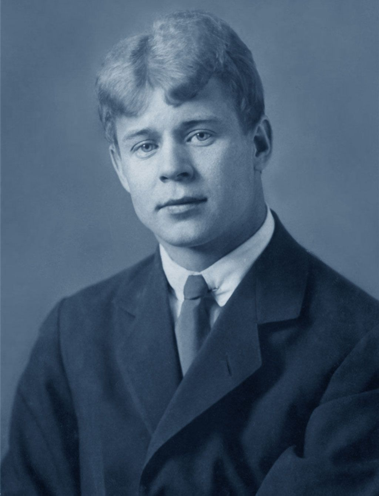

Пример страницы с Bootstrap
Это простой пример страницы, стилизованной с помощью CSS-фреймворка Bootstrap.
Есенин Сергей
Сергей Есенин
Родился в селе Константинове Рязанской губернии.Жизнь а русской глубинке с раннего детства вдохновляла мальчика,и уже в девять лет он написал свои первые стихи.

Стихи Есенина
Белая берёза под моим окном принакрылась снегом,точно серебром.На пушистых ветках снежною каймой распустились кисти белой бахромой.